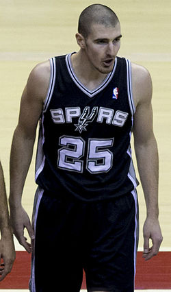

Nando de Colo

Fiche d’identité
Nationalité : France
Naissance : 23 juin 1987 (29 ans) Sainte-Catherine (Pas-de-Calais)
Taille : 1,95 m
Poids : 107 kg
Situation en club
Club actuel : BCM Gravelines-Dunkerque
Numéro : 14
Poste : Ailier fort
Retour